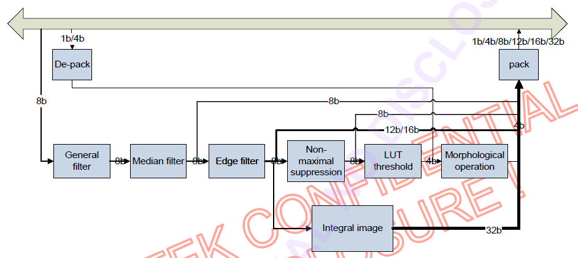
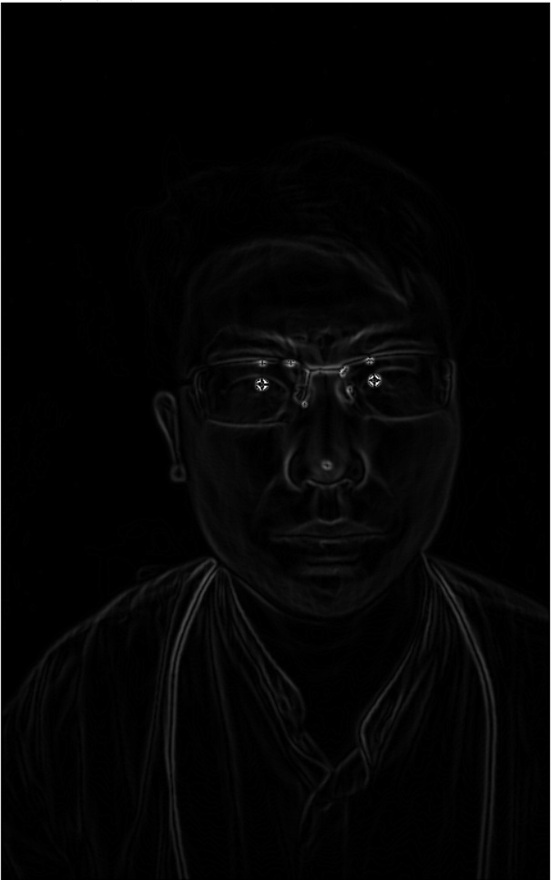

[TOC]
1. 概述
联咏IVE主要包括通用滤波、中值滤波、边沿滤波、非极大值抑制、阈值查找表、形态学操作和图像积分等功能。有些功能可以独立运行，有些功能可以通过子功能的组合完成。
2. 相关依赖
关于使用IVE库所需的依赖库详细如下：
- hdal：该库主要包含联咏硬件抽象层的相关内容；
- vendor_cv：该库主要包含计算机视觉相关内容；
- pthread: IVE支持多线程，需要依赖该库实现；
3. 编译参数
再depth_magic项目中，使用如下编译参数可开启IVE功能，主要使能WITH_NOVATEK_IVE选项；
1 | cmake -DCMAKE_BUILD_TYPE=Release -DCMAKE_CXX_FLAGS="-mfpu=neon" -DWITH_OPENMP=OFF -DWITH_NFS=ON -DDEPTH_MAGIC_BUILD_SHARED=ON -DWITH_NOVATEK_IVE=ON -DWITH_INIT_NOVATEK_IVE=ON .. |
如果在嵌入式APP中运行，为了避免重复初始化操作，需要将WITH_INIT_NOVATEK_IVE选项置为OFF。
4. 算法操作
如下图所示，是IVE的功能组成框图。如果实际需求是在中间某个功能模块输出，则相应后边的功能模块需要关闭。
 ### 4.1. Canny滤波器
Canny滤波器可以由gauss滤波、边沿滤波、非极大值约束、阈值查找表和形态学操作等组成，其各个模块之间连接框图如下：
4.1.1. 功能模块配置
- 高斯滤波
关于高斯的滤波系数如下：
\[ \begin{bmatrix} 1 & 2 & 1\\ 2 & 4 & 2\\ 1 & 2 & 1 \end{bmatrix} * \frac{1}{16} \tag{1} \]
- 边沿滤波
x轴的滤波系数为如下公式(2)： \[
G_x = \begin{bmatrix}
-1 & 0 & 1\\
-2 & 0 & 2\\
-1 & 0 & 1
\end{bmatrix} \tag{2}
\]
y轴的滤波系数为如下公式(3)： \[
G_y = \begin{bmatrix}
1 & 2 & 1\\
0 & 0 & 0\\
-1 & -2 & -1
\end{bmatrix} \tag{3}
\] 3. 非极大值抑制
目前设置非极大值抑制的系数为160。
- 阈值查找表
如果输出格式为1比特输出，则只有阈值0有效，测试时设置阈值为20。
- 形态学操作
测试代码中使用的腐蚀掩码为如下图格式，其中白色对应系数中FALSE，其余部分对应系数为TRUE。

4.1.2. Canny滤波结果
如下图所示，是Canny滤波器的输出结果与原图的对比。其中，左边是原图，右边是Canny输出结果。
注: 由于阈值查找表只有一个阈值可以使用，所以无法实现滞后阈值算法；
4.2. Sobel滤波
Sobel滤波器可以由Gauss滤波、中值滤波和边沿滤波组合而成。 #### 4.2.1. X和Y方向的梯度
如下图所示，左图代表求取的X轴方向的梯度，右图代表求取的Y轴方向梯度。
4.2.2. Sobel滤波结果
如下图所示，是结合X和Y轴梯度的结果，根据\(x^2 + y^2\)求取对应结果。
4.3. 非极大值抑制
Sobel滤波器可以由Gauss滤波、中值滤波、边沿滤波和非极大值抑制组合而成。如下图所示，是非极大值抑制的结果。 